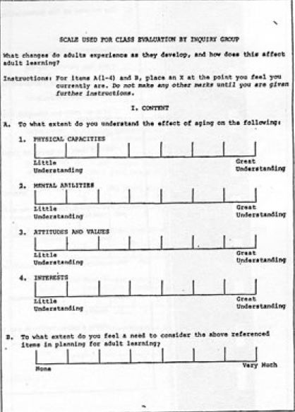
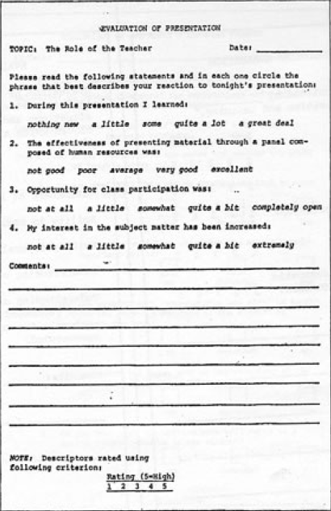

Recursos de Aprendizaje
Recurso de Aprendizaje A:
Comparación del aprendizaje autodirigido o dirigido por el profesor
| Supuestos | ||
|---|---|---|
| Sobre | Dirigido por el profesor | Autodirigido |
| Concepto del aprendiz | Personalidad dependiente | Organismo autodirigido crecientemente |
| Papel de las experiencias de aprendizaje | Tienden a acumularse más que a utilizarse | Un recurso valioso para el aprendizaje |
| Disposición para aprender | Varía con los niveles de madurez | Se desarrolla a partir de las tareas y problemas de la vida |
| Orientación hacia el aprendizaje | Centrado en el contenido | Centrado en tareas y problemas |
| Motivación | Recompensas y castigos externos | Curiosidad e incentivos internos |
| Elemento del proceso | ||
|---|---|---|
| Elementos | Dirigido por el profesor | Autodirigido |
| Clima | Formal: autoritario | Informal: Mutuo respeto, colaboración, consenso y apoyo |
| Planificación | Principalmente por el profesor | Toma de desiciones participativa |
| Diagnóstico de las necesidades | Principalmente por el profesor | Valoración entre el profesor y el alumno |
| Establecimiento de metas | Principalmente por el profesor | Negociación mutua |
| Diseño de un plan de aprendizaje | Unidades de contenido. Curso programado |
Proyectos de aprendizaje. Secuencias en términos de preparación |
| Actividades de aprendizaje | Técnicas de transmisión. Lecturas asignados |
Proyectos de investigación. Estudio independiente. Técnicas experimentales |
| Evaluación | Principalmente por el profesor | Por una evaluación mutua de la evidencia recogida |
Recurso de Aprendizaje B:
Competencias para el aprendizaje autodirigido
| Competencias para el aprendizaje autodirigido | Mi grado respecto a las distintas competencias | |||
|---|---|---|---|---|
| Nulo | Débil | Justo | Fuerte | |
| 1. Comprensión de las diferencias en los supuestos, sobre aprendices y sobre habilidades necesarias para aprender bajo la dirección del profesor y autónomamente. Habilidad para explicar estas diferencias a los otros. | ||||
| 2. Concepto sobre sí mismo como una persona no dependiente y autodirigida. | ||||
| 3. Habilidad para relacionarme con los compañeros cooperativamente, para verlos como recursos para el diagnóstico de mis necesidades, la planificación de mi aprendizaje y para el aprendizaje. Habilidad para ayudarles o recibir ayuda de su parte. | ||||
| 4. Habilidad para diagnosticar mis propias necesidades de aprendizaje de modo realista, con ayuda de los profesores y de los compañeros. | ||||
| 5. Habilidad para traducir las necesidades de aprendizaje a objetivos de aprendizaje de forma que sea posible la evaluación de su logro. | ||||
| 6. Habilidad para relacionarme con los profesores como facilitadotes, apoyos o consultores y para tomar la iniciativa en el uso de estos recursos. | ||||
| 7. Habilidad para identificar recursos humanos y materiales apropiados a los tipos diferentes de objetivos de aprendizaje. | ||||
| 8. Habilidad para seleccionar estrategias efectivas y para utilizar los recursos de aprendizaje y llevar a cavo estas estrategias con habilidad y con iniciativa | ||||
| 9. Habilidad para recoger y validar evidencia del logro de varios tipos de objetivos de aprendizaje. | ||||
Recurso de Aprendizaje C:
Contracto de aprendizaje
| 1. Objetivos | 2. Recursos y estrategias | 3. Evidencias de cumplimiento | 4. Criterios y métodos de validación |
|---|---|---|---|
| 1. Comprender las implicaciones teóricas y prácticas del aprendizaje autodirigido y dirigido por el profesor. | Experiencias 1, 2 y 3. Leer a Brown, Eble, Houley Tough. Recurso de aprendizaje A. | Una presentación oral o escrita de las definiciones, fundamentos, asumpciones y habilidades requeridas para cada uno. | Hacer una presentación a estudiantesuniversitarios, profesores y amigos y obtener una calificación en una escala de 1 a 5 en: 1) claridad, y 2) comprensión; y resultar de utilidad para ellos. |
| 2. Mejorar mi propia concepción como una persona autodirigida. | Experiencia 4. | Crear un contrato de aprendizaje satisfactorio. | Calificación de dos compañeros y del profesor de mi contrato de aprendizaje. |
| 3. Adquirir la habilidad de usar a los profesores y otras personas como recursos. | Experiencia 4. Recurso de aprendizaje J. | Uso del profesor como consultor y fuente de información | Calificación de mi profesor de la Experiencia 4 sobre mi habilidad para obtener ayuda e información. |
| 4. Incrementar mi habilidad para reunir y validar evidencias del cumplimiento de los objetivos. | Experiencia 4. Recurso de aprendizaje N. Recurso de aprendizaje O. | Identificar evidencias, criterios y métodos para validar la Experiencia 4. | Calificación de dos compañeros y del profesor de la adecuación de las evidencias y criterios y métodos de validación |
Recurso de Aprendizaje J:
Estrategias y Técnicas de Aprendizaje
Diseñar un Plan de Investigación
- ¿Cuál es la cuestión a la que tengo que responder?
Con los siguientes criterios de calidad:- ¿Es una pregunta que merece la pena?
- ¿Es una cuestión que realmente me preocupa?
- ¿Es una cuestión que se puede responder con datos?
- ¿Es clara e inteligible para otros?
- ¿Qué datos necesito para responder esta cuestión?
Con los siguientes criterios de calidad:- ¿Has identificado sub-cuestiones que requieran distintos tipos de datos?
- ¿Tienes claro qué datos necesitas para resolver esta cuestión y no otra?
- ¿Los datos están disponibles dentro de tu tiempo, limitaciones, dinero, etc.?
- ¿Cuáles son las fuentes más apropiadas y exactas para esos datos?
Con los siguientes criterios de calidad:- ¿Las fuentes son factibles para ti, es decir, están a tu alcance y nivel de competencia?
- ¿Las fuentes son fidedignas y resultan un repositorio auténtico de los datos que necesitas en particular?
- ¿Está claramente diferenciado los datos que necesitas de las fuentes primarias y de las secundarias?
- ¿Cuáles son los métodos más eficientes y efectivos que puedo emplear para obtener los datos de esas fuentes?
Con los siguientes criterios de calidad:- ¿Son ésas los métodos más eficaces para obtener los datos de las fuentes indicadas?
- ¿Eres capaz de utilizar estos métodos, o necesitas una formación adicional para emplearlos?
- ¿Los métodos elegidos te proporcionarán datos fiables y válidos?
- ¿Estos métodos producirán los datos que necesitas para responder a la pregunta?
- Cómo debe organizar y analizar los datos para dar respuesta a mi pregunta?
Con los siguientes criterios de calidad:- ¿Sabes utilizar los métodos de análisis, o necesitas una formación adicional?
- ¿Los métodos de análisis producirán una respuesta clara y significativa a la pregunta que has lanzado?
- ¿Son los métodos más relevantes y eficientes para analizar los datos de que dispones y la cuestión que has planteado?
- ¿Cómo debo documentar mi respuesta y comprobar su validez?
Con los siguientes criterios de calidad:- ¿La respuesta está suficientemente respaldada por los datos?
- ¿La manera de presentarlos es la más eficiente e inequívoca?
Algunas habilidades prácticas para realizar preguntas
Recurso de Aprendizaje K:
Métodos dependientes de los objetivos
| Tipo de Objetivo | Métodos más apropiados |
|---|---|
| CONOCIMIENTO (Generalización sobre experiencias, interiorización de información) | Conferencia, televisión, debate, diálogo, entrevista, simposium, panel, entrevista en grupo, coloquio, película, transparencias, grabación, discusión sobre un libro, lectura, instrucción programada. |
| COMPRENSIÓN (Aplicación de información y generalización) | Participación en audiencias, demostración, dramatización, discusión socrática, proyecto de resolución del problemas, método del caso, resolución de incidentes críticos, juegos de simulación. |
| HABILIDADES (Incorporación de nuevas formas de realización mediante la práctica) | Ejercicios de práctica de habilidades, role-playing, casos participativos, juegos de simulación, grupos de formación de relaciones humanas, ejercicios no verbales, ejercicios, clases particulares. |
| ACTITUDES (Adopción de nuevos sentimientos por experimentar un mayor éxito con ellos que con los anteriores) | Discusión de experiencias compartidas, role-playing, resolución de incidentes críticos, método del caso, juegos de simulación, casos participativos, terapia de grupo, orientación. |
| VALORES (Adopción y priorización de creencias) | Ejercicios de clarificación de valores, lectura de biografías, conferencia, debate, simposium, coloquio, dramatización, , role-playing, resolución de incidentes críticos, juegos de simulación. |
Recurso de Aprendizaje L:
Ejercicio de Lectura Proactiva de un Libro
Fundamentos
Objetivos
Ejercicios
- En el anuncio previo para el encuentro en el que se realizará en ejercicio, indica a los participantes que traigan con ellos un libro informativo que contenga sobrecubierta, tabla de contenidos e índice.
- En la apertura de la sesión, explica los fundamentos y los objetivos del ejercicio.
- Añade interés al ejercicio que los participantes intercambien sus libros, de forma que cada uno trabaje con un libro que no le resulta familiar.
- Pide que los participantes sigan los siguientes pasos:
- Sitúate en la sobrecubierta y lee lo que el editor tiene que decir sobre el propósito del libro.
- Vuelve al final de la sobrecubierta para leer lo que el editor dice sobre el autor su cualificación para escribir un libro de esas características.
- Acude a la parte inicial (introducción, prefacio) y lee la orientación del autor o del editor para el libro.
- Lee la tabla de contenidos para examinar cómo el autor ha organizado la información en capítulos, secciones o cualquier otra categoría de contenidos.
- Cierra el libro, toma una hoja de papel y escribe tres preguntas sobre las que tienes curiosidad como resultado del examen preliminar del libro.
- Toma la primera pregunta e identifica en ella una palabra clave o una frase que pienses que pueda estar en el índice del libro.
- Busca en el índice esa palabra o frase. Si no está, piensa en algún sinónimo y búscalo. Si tampoco está, lee la tabla de contenidos para localizar qué página del libro puede contener la información que buscas.
- Lee la parte del libro que trata tu pregunta y busca la respuesta. Si el autor hace referencia a materiales en otras partes del libro, sigue estas indicaciones hasta que tengas toda la información relevante para tu pregunta.
- Si el tiempo te lo permite, haz lo mismo con la segunda y tercera pregunta.
- Ahora haz que los participantes analicen su experiencia. Las siguiente preguntas suelen conducir a ideas más profundas:
- ¿Qué diferencia sientes al emplear un libro como un recurso en comparación a los que sientes normalmente sólo leyéndolo?
- ¿Hay alguna diferencia en la calidad de la información que has obtenido?
Recurso de Aprendizaje N:
Tipos de evidencias para los objetivos
| OBJETIVO | TIPO DE EVIDENCIA |
|---|---|
| CONOCIMIENTO | Informe sobre el conocimiento adquirido, como ensayos, exámenes, presentaciones orales, presentaciones audiovisuales. |
| COMPRENSIÓN | Ejemplos de utilización del conocimiento en la resolución de problemas, como resolución de incidencias, simulaciones, propuestas de ejecución de proyectos, proyectos de investigación con conclusiones y recomendaciones. |
| HABILIDADES | Ejercicios de representación con calificación por parte de los observadores. |
| ACTITUDES | Escalas de actitudes, representación de un role-playing, resolución de incidentes críticos, simulación, etc., con realimentación por parte de los observadores. |
| VALORES | Escalas de valores, representación en grupos de clarificación de valores, resolución de incidentes críticos, simulación, etc., con realimentación por parte de los observadores. |
Recurso de Aprendizaje O:
Ejemplos de escalas de puntuación

